ℹ️ What CaVeSal® IA is
CaVeSal® IA is your artificial-intelligence clinical assistant, connected across the whole CaVeSal® ecosystem — today to the Prenatal Calculator and the Clinical Record, and in the future also to CaVeSal® GYN, Obstetric Emergency and Labor, and Neonatal. It is not a generic chatbot: it answers relying first on clinical guides curated specifically for CaVeSal®, backed by ACOG, FIGO, NICE, WHO, IADPSG and ATA, and it only searches external sources if you explicitly ask it to.
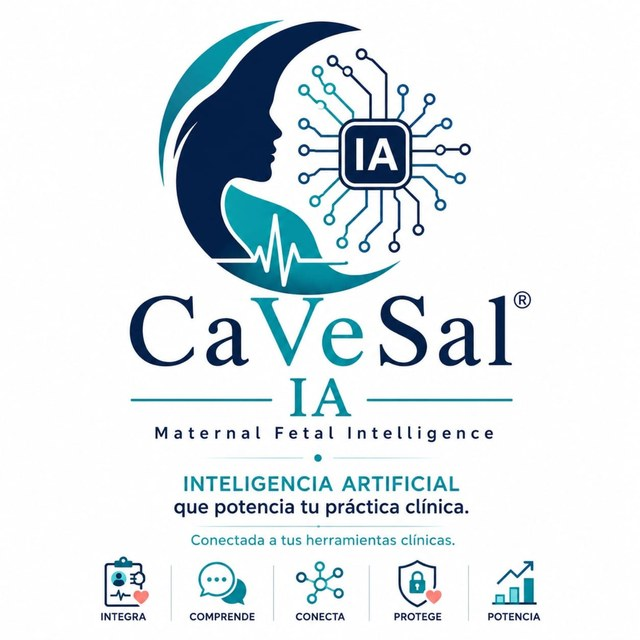
The 5 pillars of CaVeSal® IA: it Integrates your clinical tools, Understands the case, Connects data between apps, Protects your patients' information and Empowers your practice.
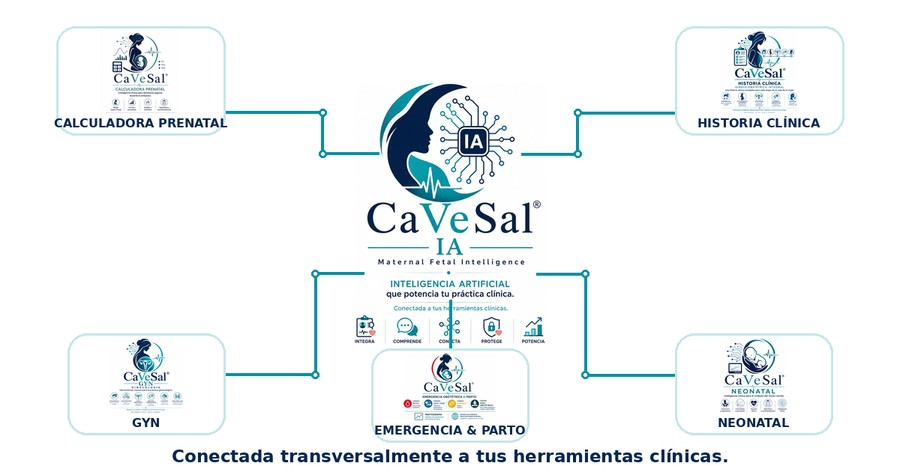
CaVeSal® IA is not a separate app: it is the intelligence layer that connects all the tools in the ecosystem.
🔑 How to activate your account
Unlike the Calculator and the Clinical Record (activation padlock inside the app itself), CaVeSal® IA is activated only once at ia.cavesal.app, with a personal account tied to your email — not to a device.
When you buy your plan (see Plans, quotas and top-ups), you receive an activation code by email.
Go to ia.cavesal.app, enter the code and your email, and choose a PIN (any PIN you like, to identify yourself later).
From then on, you use CaVeSal® IA with your email and PIN from any device — office PC, phone, tablet — without entering the code again. The code is redeemed only once.
You choose the response language (Spanish, English or Portuguese) once, when you activate your account.
📋 Access from the Clinical Record
Open the patient's record and tap "Analizar con CaVeSal® IA" (Analyze with CaVeSal® IA) — it sits among the export buttons (PDF, Word, Email, WhatsApp, Print, Send to Calculator), marked with the 🔒 icon and in purple.
The chat screen opens with the data of that specific patient already loaded as context — never your whole patient database.
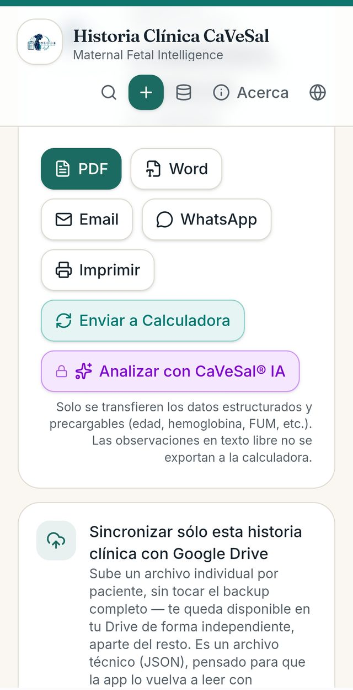
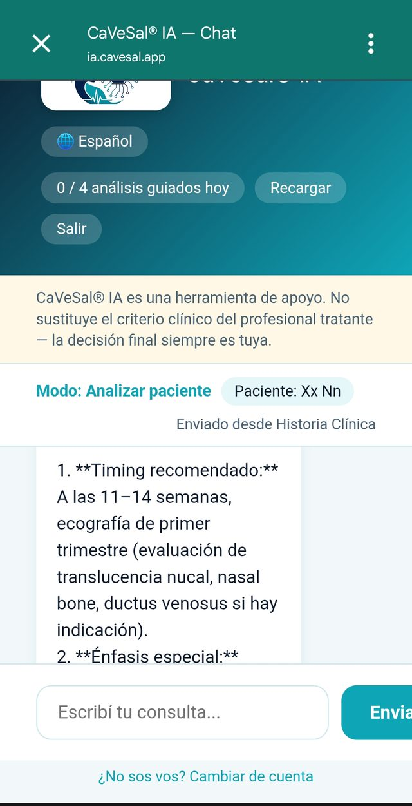
From the Clinical Record, the patient is identified by name in the chat.
📊 Access from the Prenatal Calculator
Calculate the case as usual and go to the "Resultado" (Result) tab.
On the "Analizar con CaVeSal® IA" card (below the Global Risk and the GA/EDD/BMI data), tap "Analizar 🔒" (Analyze) to send the case for a second clinical reading.
The chat opens with the current calculation already loaded as context — calculated risks, findings by module (Doppler, biometry, GDM, etc.) and gestational age.
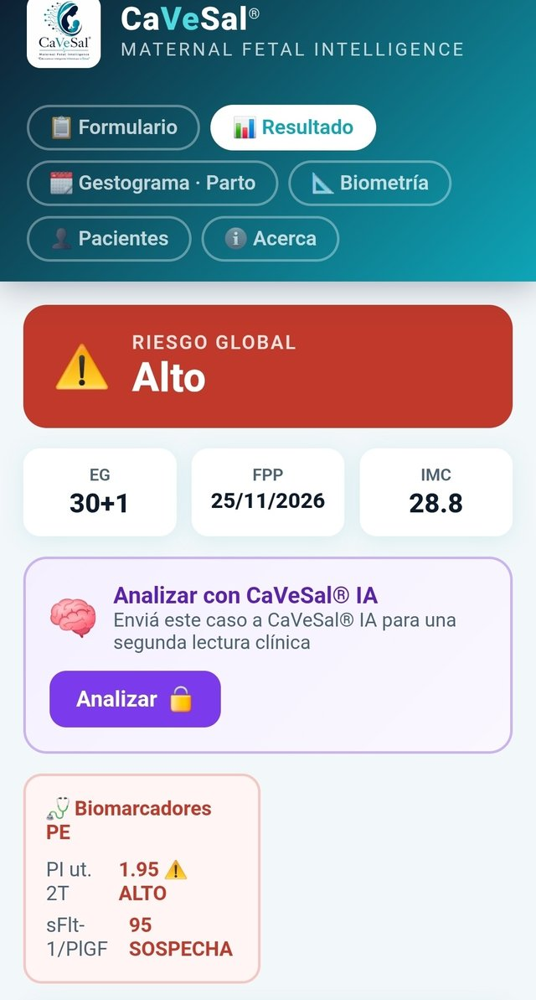
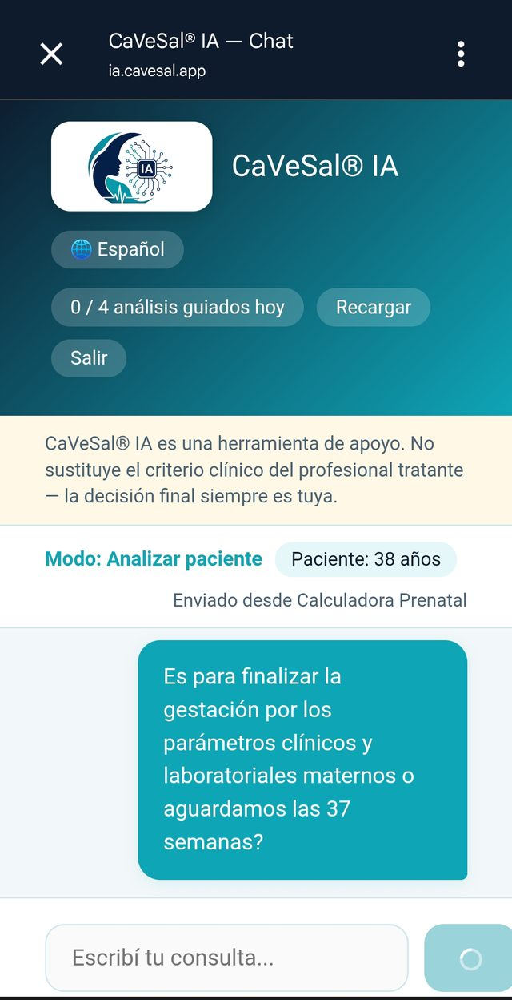
💬 The chat screen: interface elements
Language selector 🌐: changes the response language (Español / English / Português) at any point in the conversation.
Quota counter ("0 / 4 análisis guiados hoy" — guided analyses today): shows how much of your daily quota is left according to your plan — it resets automatically every day.
"Recargar" (Top up): buy extra quota if you have run out of queries or analyses for today (see Plans, quotas and top-ups).
"Salir" (Log out): ends your CaVeSal® IA session.
Disclaimer banner: always visible above the conversation — "CaVeSal® IA is a support tool. It does not replace the clinical judgment of the treating professional — the final decision is always yours."
Mode and patient indicator: shows which mode you are working in ("Modo: Analizar paciente" — Mode: Analyze patient) and the identifier of the active patient (name or age, depending on the source), with a label showing where the data came from ("Enviado desde Historia Clínica" / "Enviado desde Calculadora Prenatal" — Sent from Clinical Record / Prenatal Calculator).
Conversation: your messages appear on the right (teal bubble) and CaVeSal® IA's answers on the left (white background), with rich text formatting (bold, lists) for quick reading during consultations.
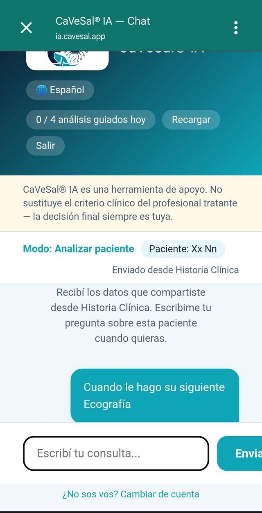
🧭 Interaction modes
Ask (free chatbot): ask specific questions during the consultation, without sending a patient's full case — concise, direct answer.
Analyze (guided agent): the mode you trigger with the button from the Calculator or the Clinical Record. CaVeSal® IA reviews the specific case you sent and, if it needs more context, asks you for it before giving a firm answer — it never assumes data it does not have.
Research (external search): only activated if you explicitly ask for it (e.g. "check whether there is an updated guideline"). CaVeSal® IA makes it clear when an answer comes from an external source, distinct from the curated guides.
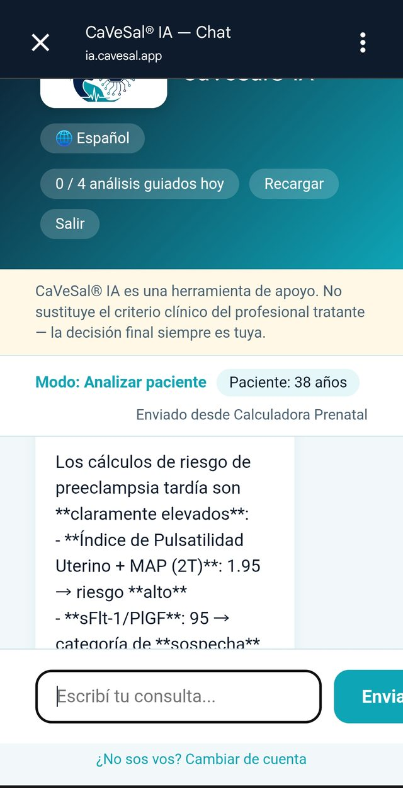
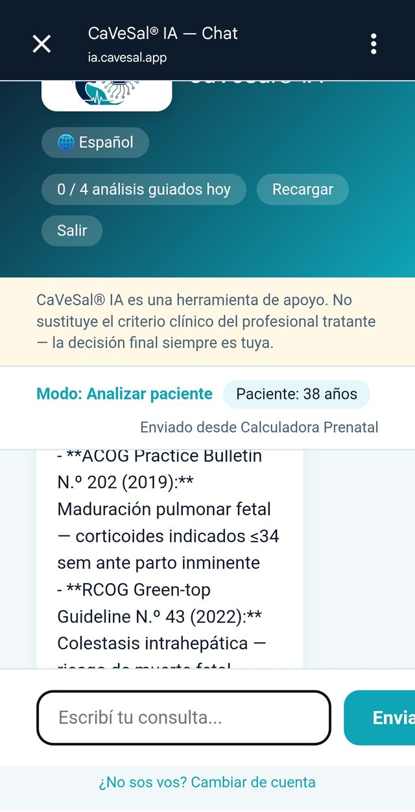
Every answer cites its source (organization + number + year), so you can verify it yourself.
🩺 Real example: a high-risk case
This exchange shows Analyze mode in action, on a case sent from the Calculator with High Global Risk (elevated uterine PI + 2nd-trimester MAP, sFlt-1/PlGF in the suspicious range).
The physician asks whether the pregnancy should be ended based on maternal clinical and laboratory parameters, or whether to wait until 37 weeks.
CaVeSal® IA answers using the case's actual gestational age (not a generic answer): it points out that the biomarkers suggest a maternal profile at high risk of late preeclampsia within the next 1–3 weeks, and immediately clarifies that the decision to deliver does not depend only on the biomarker-based risk, but on the full clinical picture — handing the final decision back to the treating physician's judgment.
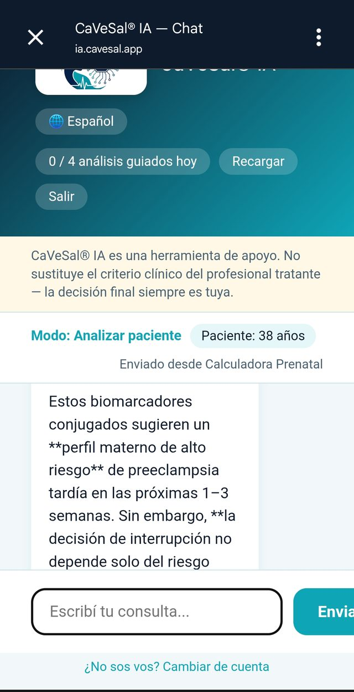
The answer incorporates the gestational age and the findings already calculated by the Calculator — there is no need to repeat them.
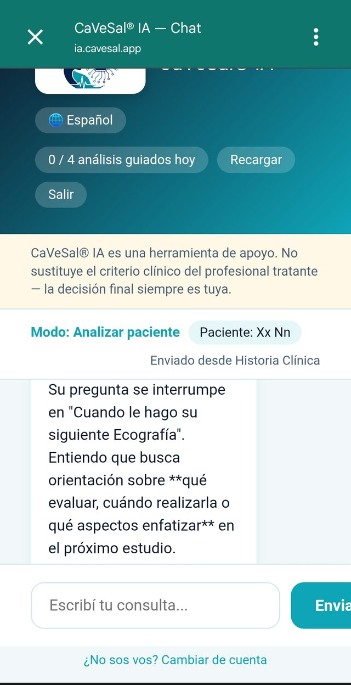
🔒 What data is sent and what happens to it
Only what you decide to send with each click is shared — from the Calculator, the current calculation; from the Clinical Record, the structured data of the record open at that moment.
Free-text notes in the Clinical Record are never exported.
From the Calculator, the patient is identified only by age — never by name or ID. From the Clinical Record, the name is sent, because it is information you have already entered and control on your own device.
The data of each CaVeSal® IA query is never stored: each interaction is one-off and ephemeral — it is analyzed and discarded, with no history saved on the server.
💳 Plans, quotas and top-ups
| Plan | Queries/day (chatbot) | Guided analyses/day | Price |
|---|---|---|---|
| Pro | 20 | 4 | USD 34.90/year |
| Premium | 50 | 8 | USD 59.90/year |
| Premium Plus | 85 | 15 | USD 99.90/year |
One-time annual payment, no automatic renewal. Personal license (by email + the PIN you choose) — not per device, so you can use it from your office PC and your phone with the same account.
Your quota resets automatically every day.
Ran out of today's quota and need to keep going? Tap "Recargar" (Top up) on the chat screen: USD 4.90 → +10 queries + 2 guided analyses. That balance does not expire and is used only once your normal daily quota runs out.
🔗 More CaVeSal® resources
Want to explore the rest of the suite?
Questions about a feature? Write to us at drverasalerno@gmail.com · Last updated: September 2026